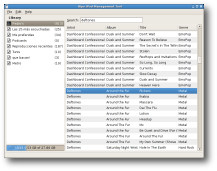

Introduction

See Hipo in action
Hipo is an application that allows you to manage the data of your iPod, Hipo is written in C# using Mono, GTK#, the cute ipod-sharp library and for tag editing it uses taglib-sharp.
Hipo is NOT a music playback software, for that you can use Banshee, Rhythmbox or Muine.
Hipo is released under the GNU General Public License (GPL).
Current Features
- Track addition and remotion
- Playlist addition and remotion
- Tags edition
- Cover support
For future features please visit the wiki page
What's New?
- Fixed sorting method and remove unnecessary code.
- Use new intltool syntax.
- Remove 'Application' category because is not valid in the freedesktop specification.
- Make sure at least one track is selected when showing the popup menu. Fixed #412792 (Benoit Garret)
- Set the checkout of the taglib-sharp as a svn external property.
- Add device properties to the menu.
- Add support for m4a files. Fixed #409097
- Add metadata edit in the tracks view. Closes #408808 (Benoit Garret)
- Add shadows around the playlist view and the tracks view. Closes #408806 (Benoit Garret)
- Update list of tracks when a change is made in the properties window. Fixed #407720 (Benoit Garret)
- Add recursive import Closes #402515. (Felipe Barros)
- Fixed percentage calculation Closes #402536, Fixed #402940. (Felipe Barros)
Translators:
Gil Forcada (ca), David Lodge (en_GB), Felipe Barros (es), Ilkka Tuohela (fi), Vincenzo Barranco (it), Reinout van Schouwen (nl), Tomasz Dominikowski (pl),
Jose Ricardo Anacleto Cardozo (pt_BR), Daniel Nylander (sv).
-
From Tarball
Hipo 0.4
-
From GNOME SVN
svn checkout http://svn.gnome.org/svn/hipo/trunk hipo
-
Ubuntu Edgy Package
Hipo 0.3 Edgy (thanks to João Pinto)
Bugs & Feature Requests
Please report bugs to Hipo Product in the GNOME Bugzilla.
Hipo is developed by :